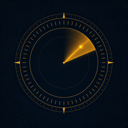

An unofficial companion app for ARC Raiders players: live map conditions by region, starts-soon alerts, item database, workbench planner, quest guides and Outpost tracking. No accounts, no ads, no tracking.
Developer: Andrew Rodriguez. Topside Intel is an unofficial fan app and is not affiliated with, endorsed by or sponsored by Embark Studios AB. ARC Raiders and related marks are property of Embark Studios AB.